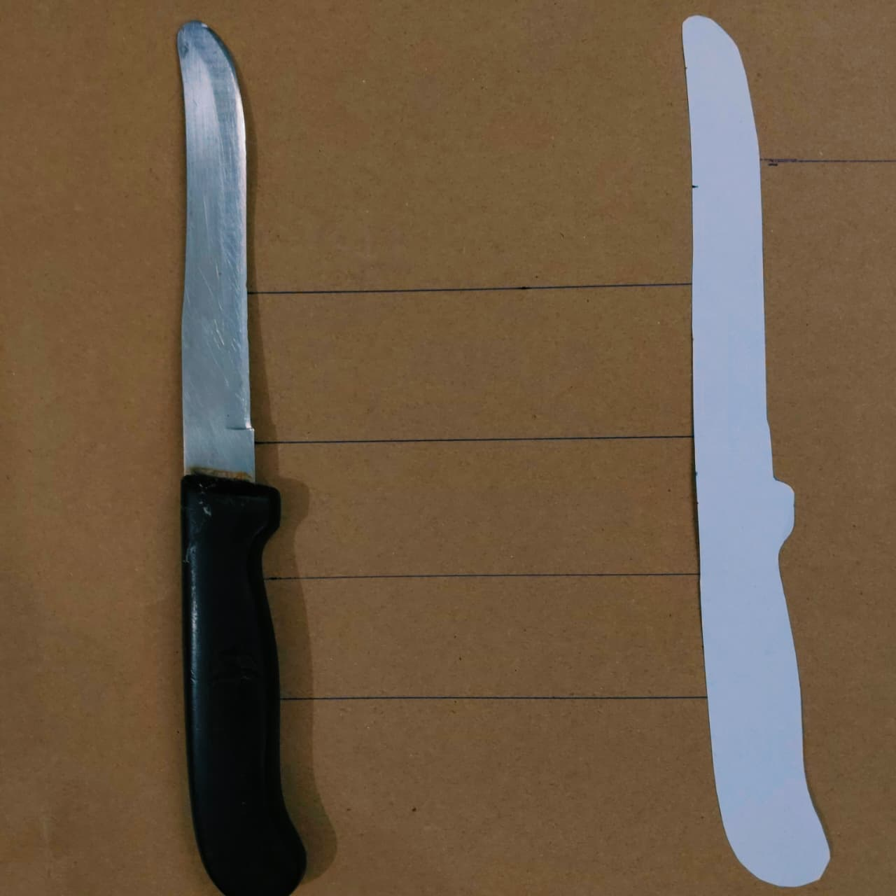

ITERATIVE CLOSEST POINT ~The Algebra of Alignment

Hey learner!
Imagine you have a real physical knife, and next to it is a paper cutout carved into that exact same shape. Your goal is to place the paper cutout perfectly over the real knife so their edges line up exactly. But you have your eyes closed, and you can only make small adjustments based on feel.

Here is how you would use the "ICP" method to align them:
- Iterative (Repeat): You know you won't get it right on the first try. You will have to make a small adjustment, check it, and repeat the process until it fits.
- Closest Point: You pick three or four points on the edge of your paper cutout. You feel around for the absolute closest edge of the real knife to each of those points.
- The Move: Once you find those closest edges, you shift and twist the paper cutout just a little bit in that direction to bring those specific points closer together.
Because you shifted the cutout, your points are in a new location. So, you start over. You find the new closest edges, and you shift and twist again. Every time you repeat this loop, the cutout gets closer and closer until it magically snaps perfectly into place over the real knife.
2D ICP Alignment Engine
■ Source Cloud (Moving)
Faint lines indicate nearest-neighbor matching pairs.
The source cloud gets failed in complete superimpose because of the limiations of ICP. Here is an another simulation to make you understand better: simulation
The ICP Mathematical Dictionary
When you look at an academic paper or a textbook on ICP, these are the standard variables you will encounter.
The Point Clouds
P is the Source Point Cloud. This is the entire set of points you want to move. Q is the Target Point Cloud. This is the stationary set of points you are trying to match against.
The Specific Points
p_i is a single Source Point. The \(i\) represents the index (e.g., point number 1, point number 2). q_i is the corresponding Target Point. This is the specific point in \(Q\) that is currently closest to \(p_i\).
The Transformation
R is the Rotation Matrix. A \(3 \times 3\) grid of numbers that describes how to tilt and turn the source cloud in 3D space. t is the Translation Vector. A \(3 \times 1\) column of numbers \((x, y, z)\) that describes how far to slide the source cloud up/down, left/right, and forward/backward.
The Centroids
\(\mu_p\) and \(\mu_q\) are the mathematical centers of mass for cloud \(P\) and cloud \(Q\).
Cross-Covariance Matrix
This is the matrix that compares the "spread" or "shape" of the centered source points against the centered target points.
SVD Matrices
When we break apart (decompose) the \(H\) matrix to find the optimal rotation, it splits into these three matrices. \(U\) and \(V\) handle the rotational directions, and \(\Sigma\) (Sigma) handles the scale (which we ignore in rigid ICP).
Error Function (MSE)
This represents the average physical distance between all matched points. The goal of the algorithm is to make \(E\) as small as possible.
The Mathematical Engine
To understand the mathematics of ICP, we have to look at it as an optimization problem. When you are processing raw vertices to extract clean structures for a web viewer or an API, you are essentially dealing with two massive arrays of 3D coordinates.
Let’s define our two sets of points.
- Source Cloud (\(P\)): The mesh you want to move. It has points \(P = \{p_1, p_2, ..., p_n\}\).
- Target Cloud (\(Q\)): The stationary reference mesh. It has points \(Q = \{q_1, q_2, ..., q_m\}\).
Our ultimate goal is to find a \(3 \times 3\) Rotation Matrix (\(R\)) and a \(3 \times 1\) Translation Vector (\(t\)) that minimizes the overall distance between the two point clouds. Here is the step-by-step mathematical breakdown of exactly what happens in a single iteration of the loop.
Step 1: Finding Correspondences (The Bottleneck)
Before we can align anything, we need to pair up the points. For every point \(p_i\) in the source cloud \(P\), we must find the single nearest neighbor \(q_i\) in the target cloud \(Q\). The mathematical objective is to minimize the Euclidean distance:
$$q_i = \arg\min_{q \in Q} ||p_i - q||^2$$Performance Note: Doing this via brute force requires checking every point against every other point, which results in a massive \(O(n^2)\) time complexity. For a production-grade backend engine, this step is almost always optimized using spatial data structures like KD-Trees , which brings the search time down to \(O(n \log n)\). This is often where developers drop down to C or C++ to handle the heavy memory lifting.
Step 2: The Objective Function
Now that we have matched pairs \((p_i, q_i)\), we want to find the rigid transformation (rotation \(R\) and translation \(t\)) that minimizes the Mean Squared Error (MSE) across all matched pairs:
$$E(R, t) = \frac{1}{n} \sum_{i=1}^{n} ||q_i - (R p_i + t)||^2$$To solve this equation efficiently without trial and error, we use a beautiful piece of linear algebra known as Singular Value Decomposition to solve the Orthogonal Procrustes problem.
Step 3: Solving for Rotation and Translation via SVD
To isolate the rotation from the translation, we shift both point clouds so that their centers of mass (centroids) sit exactly at the origin \((0,0,0)\).
1. Calculate the Centroids:
$$\bar{p} = \frac{1}{n} \sum_{i=1}^{n} p_i \quad \text{and} \quad \bar{q} = \frac{1}{n} \sum_{i=1}^{n} q_i$$2. Center the Point Clouds: Subtract the centroids from every individual point:
$$p'_i = p_i - \bar{p} \quad \text{and} \quad q'_i = q_i - \bar{q}$$3. Compute the Cross-Covariance Matrix (\(H\)): We multiply the centered source points by the transposed centered target points. This creates a \(3 \times 3\) matrix that encodes how the two shapes relate to each other in 3D space:
$$H = \sum_{i=1}^{n} p'_i (q'_i)^T$$4. Apply Singular Value Decomposition: We decompose the covariance matrix \(H\) into three matrices:
$$H = U \Sigma V^T$$Where \(U\) and \(V\) are orthogonal matrices, and \(\Sigma\) is a diagonal matrix of singular values.
5. Extract the Rotation Matrix (\(R\)): The optimal rotation matrix to align the two clouds is simply:
$$R = V U^T$$(Crucial check: If the determinant of \(R\) is negative (\(\det(R) = -1\)), the math has accidentally given us a reflection instead of a pure rotation. To fix this, we multiply the third column of \(V\) by -1 before calculating \(R\).)
6. Extract the Translation Vector (\(t\)): Now that we have the rotation, we can easily find the translation by looking at how far apart the two original centroids are, factoring in our new rotation:
$$t = \bar{q} - R \bar{p}$$Step 4: Apply and Iterate
We have our \(R\) and \(t\). We now update our original source point cloud by applying the transformation to every point:
$$P_{new} = R P_{old} + t$$Because we only matched the closest points in Step 1 (not the correct points), \(P_{new}\) is closer, but not perfectly aligned. We check the new error \(E(R, t)\). If the error is still above a certain threshold, we feed \(P_{new}\) back into Step 1, find entirely new closest-point pairs, and do the matrix math all over again. The algorithm stops when the error hits zero, or when it stops improving.
Visualizing the Algorithm
If you want to see this process in action, this excellent breakdown by Computerphile demonstrates how ICP aligns complex 3D meshes using iterative matching and SVD.
Key Takeaways:
• [00:03:45] The iterative process: Match points, optimize rotation/translation, and repeat.
• [00:06:18] The Local Minimum trap: Why a bad initial guess will cause the algorithm to fail.
• [00:09:40] Using Singular Value Decomposition (SVD) to calculate the optimal rotation matrix.
• [00:12:11] Real-world application: Stitching the famous Stanford Bunny mesh together in MeshLab.
The Local Minima Trap
ICP is a "greedy" algorithm. It only looks at the absolute closest point at any given millisecond. Because of this, it has a fatal flaw: if your paper cutout starts out completely upside down compared to the real knife, the algorithm might decide the shortest mathematical distance is to map the handle to the blade.
It gets trapped in a mathematical valley called a Local Minimum. To use ICP effectively, you must give the computer a good "initial guess"—often by aligning the bounding boxes of the two shapes first—before you let the SVD matrix algebra take over.